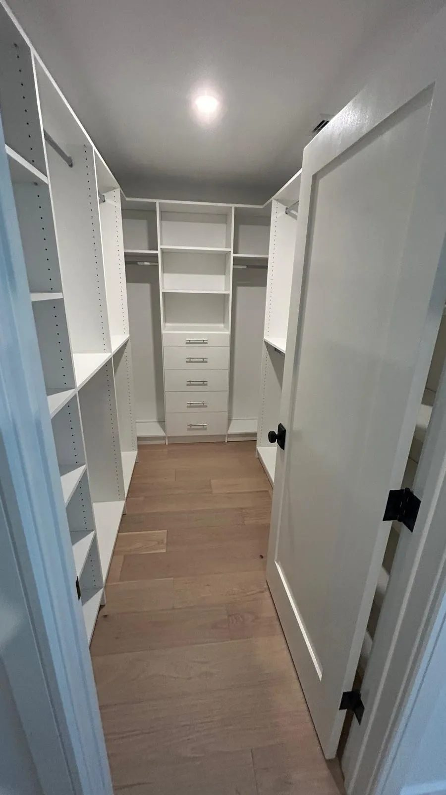
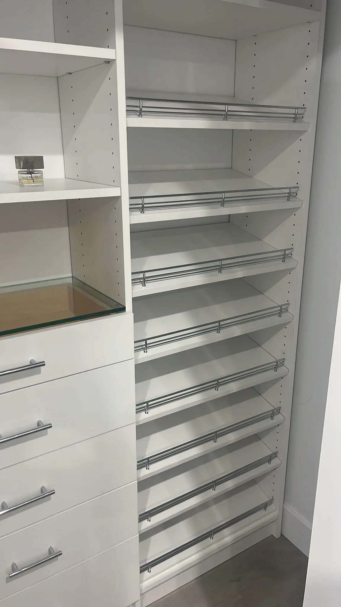

What to write down
- Wall width at the floor, and again at 84 inches. These are rarely the same. Use the smaller one.
- Ceiling height at both ends of each wall.
- Depth, front to back, measured at the floor.
- Baseboard height and how far it sticks out.
- Door swing: which way it opens and how far into the room.
- Any obstruction: air return, light switch, outlet, sloped ceiling, access panel. Measure to the centre of each, from the nearest corner.
- Window sill height, if there is one.
- Floor type, and whether it runs under where the closet will go.
The two that people forget
Baseboard. Cabinetry either sits on top of it, gets scribed around it, or you remove it. All three are fine, but the decision changes the drawing and a quote made without it is wrong by the thickness of your baseboard on every wall.
Out of square. Measure the wall at the floor and at head height. In an older house the difference can be half an inch or more. Everything we build is cut to the real dimensions, which is why we take them twice.
Photograph it properly
Stand in the doorway and take one straight-on photo of each wall, holding the phone at chest height and level. Then one photo of each corner. Do not use panorama. It bends straight lines and makes a room look like a shape it is not.

Then price it
With those numbers you can put your actual room into our builder and get a real figure, not a range. When we come out for the free measure we will check everything and tell you if anything changes.
The eight measurements, in order
Take them with a steel tape, not a cloth one, and write them down as you go rather than trying to remember them. Inches to the nearest half are fine.
- Wall width, three times. At the floor, at about four feet, and near the ceiling. They will not match. The smallest is the one that matters, because that is what the cabinetry has to pass.
- Depth, at both ends. Front edge of the opening to the back wall, left end and right end. A difference of an inch is normal and it is why scribing exists.
- Ceiling height, at both ends. Floors slope more than ceilings do. If these differ by more than half an inch, say so.
- Baseboard height and how far it sticks out. Usually three to five inches tall and half an inch proud. It decides whether the run gets cut around it or packed off it.
- The opening. Width and height of the doorway itself, which is not the same as the wall width, and is what the doors have to work in.
- Anything on the wall. Outlet, light switch, vent, thermostat: how far along the wall from the left corner, and how high off the floor.
- Anything in the way. A column, a pipe boxing, a bulkhead across the top, a radiator or baseboard heater. Width and how far it projects.
- The route in. Door widths, stairs, turns. A 36-inch panel does not go round a tight landing, and it is better to know that now.

Three mistakes almost everyone makes
Measuring the shelf instead of the wall. The existing shelving is usually cut short of the wall at one end. Measure wall to wall, not what is in there now.
Forgetting the floor is not level. If the ceiling height differs by more than half an inch across the run, a full-height closet needs scribing at the top or it will show a tapering gap. Worth knowing before anything is cut.
Not checking whether the walls are square. Measure both diagonals of the floor. If they differ, the room is a parallelogram, which every room is to some degree. We build to it rather than against it, but only if we know.
Photograph it as well
Measurements tell us the size. Photographs tell us the problem. Four shots are enough: the whole opening from a step back, each end wall straight on, and one down at the floor showing the baseboard and the flooring.
If there is an outlet, a vent or anything odd, take one more of it with the tape held against the wall so the position reads off the picture. That single photograph saves more site surprises than anything else on this page.
What to do with the numbers
Put them straight into the 3D builder. Type your real width, depth and ceiling, lay out the inside section by section, mark the outlet or the window where it actually is, and you will have a drawing and a price off our own parts list before anyone has been to the house.
Or skip all of it. The measure is free, it takes about forty minutes, and we bring a laser. There is no obligation attached to it and you keep the drawing either way. Book one.